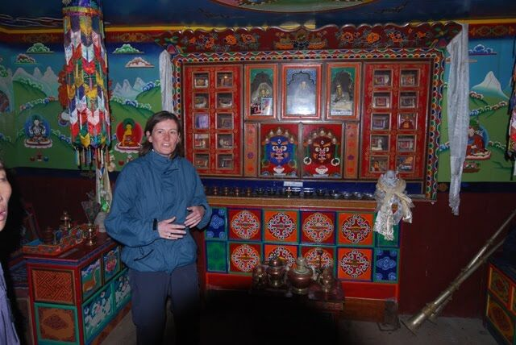
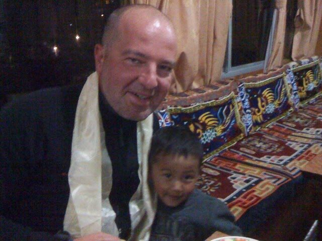

Today was Ralf's birthday. Once again, all the very best wishes from here.
Last night I only slept briefly. That may also have to do with the altitude (3,450 m). I woke up at 1:40, wrote yesterday's blog post, listened to a podcast, but couldn't get back to sleep. Then the alarm went off at 5:45 anyway, because we wanted to meet at 6 to walk to a nearby viewpoint.
So I got ready and went to the meeting point. Ralf stayed in bed today, especially as it's his birthday. Stefan and Sandra from the other group and I climbed with their guide to the other lodge and picked up the other two from our group, Harald and Alexander, and our guide. Together we climbed for about 15 minutes to a viewpoint from which we could see Mount Everest for the first time. It was partly covered by clouds.

At this time of day (7 am) the weather in Namche Bazaar is still good; then the clouds slowly roll in. From the viewing platform you could also see other great mountains. By the way, Mount Everest has no pointed summit, it's more rounded at the top.

On the way back to our lodgings we visited a Sherpa museum (see photo with Sandra) about the life of the Sherpas. There are also lots of photos of Sherpas who have been to the top of Mount Everest. Some have been up there 18 times. Incredible. Of course nobody back home talks about that.
Back at the lodge Stefan, Sandra and I had breakfast. Then I went to the internet café, blogged a bit and read e-mails. Back in the lounge I found Ralf with the others, including Harald and Alexander, who had decided to move to our hotel too.
Ralf and I stayed at the hotel today; the others did a 4–5-hour day hike.
I used the time to upload my blog and some photos. Then we went out briefly. At 1 pm we had lunch (fried noodles), and dead tired and completely chilled I went to the room. Fully wrapped up I slept for about 2.5 hours. Finally I was warmer.
I took a hot shower, got comfortably dressed and met Ralf in the lounge. The others came shortly afterwards. We sat together, chatted and ordered dinner for 7 pm.
Before and during dinner we discussed whether it would be better to merge our two groups for the next few days, as we're taking the same route. After a lot of back and forth we decided to do it, which means that tomorrow we have to manage a double stage to keep pace with the other group (Stefan & Sandra). They don't have as much time and so have a tighter schedule than we do.

After dinner the others gave Ralf a poppy-seed pastry they had bought at a German bakery in town, and Ralf poured champagne he had bought in a shop in town yesterday. So we chatted about all sorts of things. It's good that we're a nice group now and will spend the next few days together.
Oh yes: Ralf gave his poppy-seed pastry to the landlord's little son (see photo), who was overjoyed and ran through the lounge loudly singing Happy Birthday. In return he gave Ralf one of those yellow-beige friendship scarves.
Tomorrow is the hard double stage. Breakfast is at 7:15, so I'm going to bed now. Good night.